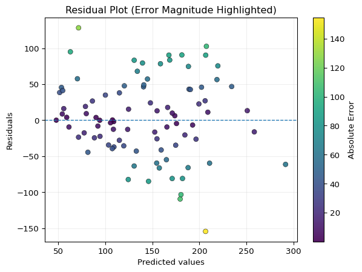

import matplotlib.pyplot as pltimport numpy as npresiduals = y_test - y_predplt.figure(figsize=(7, 5))# Scatter with contrastscatter = plt.scatter( y_pred, residuals, c=np.abs(residuals), # color by error magnitude cmap="viridis", edgecolors="black", linewidth=0.4, alpha=0.9)# Reference line at zero errorplt.axhline(0, linestyle="--", linewidth=1)plt.xlabel("Predicted values")plt.ylabel("Residuals")plt.title("Residual Plot (Error Magnitude Highlighted)")# Colorbar for interpretationplt.colorbar(scatter, label="Absolute Error")plt.grid(alpha=0.2)plt.show()

This plot helps us examine how prediction errors behave across the range of model outputs.
It allows us to detect:
systematic bias
If residuals are mostly above or below zero, the model consistently over- or under-predicts
uneven error distribution (heteroscedasticity)
If the spread of residuals changes across predicted values, the model performs inconsistently across ranges
regions of poor performance
Clusters of large residuals (highlighted by stronger color) indicate where the model struggles to capture the underlying pattern
Rather than summarizing error with a single number, this plot reveals how and where the model fails, which is essential for reliable interpretation.
What Reliable Evaluation Requires
A model is not reliable because:
it produces a number
it performs well on one split
A model becomes more reliable when:
performance is stable across splits
errors are understood, not just measured
evaluation reflects how the model will be used
What Can Go Wrong
Over-trusting a Single Metric
One number cannot capture full model behavior.
Ignoring Variability
Performance that changes across splits indicates instability.
Misinterpreting Metrics
Metrics must be interpreted in context.
Skipping Error Analysis
Without examining residuals, important patterns may be missed.
CDI Insight
A model is not evaluated once.
It is evaluated across conditions.
Reliability comes from consistency, not a single result.
Summary
A single train/test split provides limited insight
Model performance varies depending on data partitioning
Cross-validation provides a more stable estimate
Metrics must be interpreted carefully
Residual analysis reveals patterns hidden by summary statistics